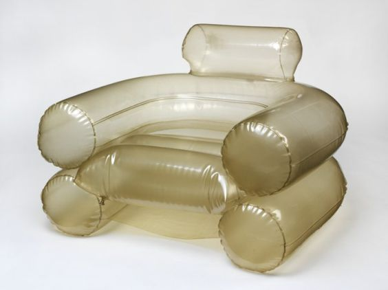
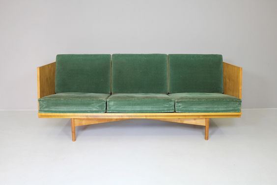
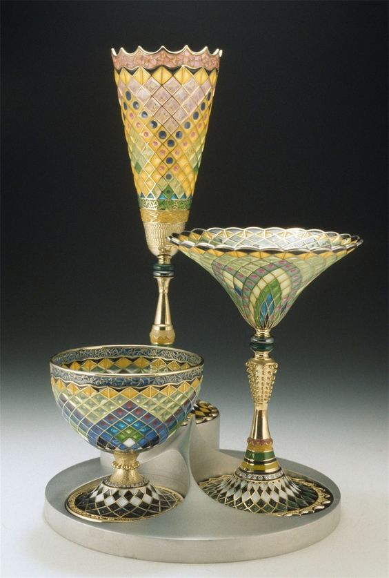
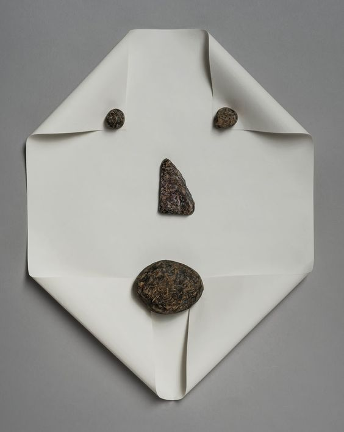

Ode to my family, dedicated to my first IT teacher. Woman with a mask by schlemmer seated in a breuer chair  Under the framework of infinitésimal art: Lick the wall, air or vacuum; invent the substance  of a new impossible tastes. Feel the air or vacuum; invent  a new, non-existent touch material. Breathe the air or rien, invent inconceivable perfumes.
Моя вторая по счёту учительница по информатике говорила, что ученик должен быть упорным, и если он сломает обе руки, пусть лучше будет в зубах держать ручку и писать, чем бездельничать.
Те каракули которые я взглядом рисую в воздухе науке не подвластны. Использую воздушные линейку, циркуль, транспортир. Простейшая блок-схема с циклом. Условие в ромбе: сделал ли ты сегодня кого-нибудь счастливым? стрелочка нет возвращает на предыдущий прямоугольник, в котором
